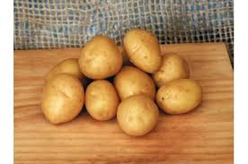
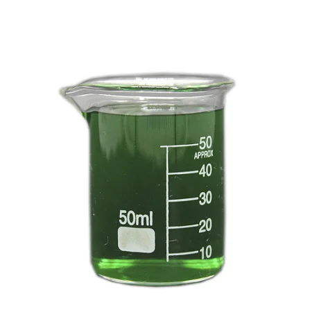
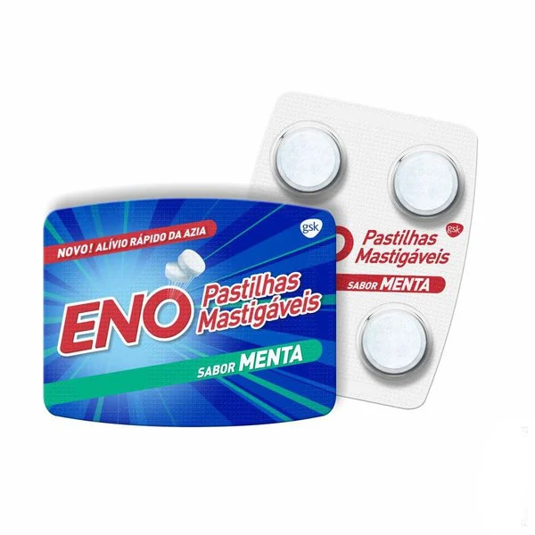
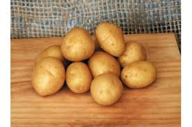
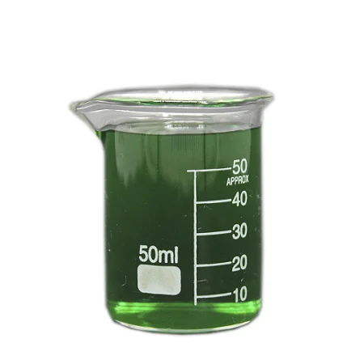
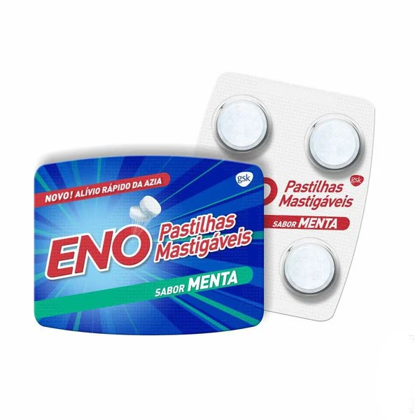

Experimento na aula de química (Experimento 1)
Na aula de hoje fizemos três experiências, onde fomos para o laboratório
de química onde ultilizamos dois bequers, uma pastilha e um objeto
para mexer a água com o pózinho dentro.
Em um dos bequer, colocamos 50 ML de água com uma pastilha antiácido,
com isso, observamos uma evolução no bequer, vimos que começou a dar algumas bolinhas na pastilha.
No outro bequer, colocamos 40 ML de água e amassamos a pastilha de antiácido,
com isso, inserimos a pastilha na água. Depois mexemos, assim observamos que
aconteceu uma reação e que a água ficou branca.
Logo em seguida, nosso amigo Joelson, bebeu a água
e nao aconteceu nada pois, não havia nada tóxico.
Experimento 2
Na segunda experiência, colocamos em um bequer água quente
e em outro colocamos água gelada, adicionamos também uma pastilha de antiácido.
Assim, possamos ver uma grande diferença entre um copo para o outro, no copo
que tinha água quente, a pastilha se dissolveu em questão de minutos, ja na água
gelada podemos perceber que ela demorou um pouco mais para ser dessolvida, quando
mexiamos percebos que ela não havia se desolvida por inteiro
Experimento 3
Nesse ultímo experimento, usamos batata, água oxigenada e uma placa de vidro.
Com isso, colocamos a batata crua na placa de vidro e um pouco de água oxigenada,
esperamos uma reação na batata, depois de algums instantes a batata teve sua reação e começou a criar bolinhas.
 




